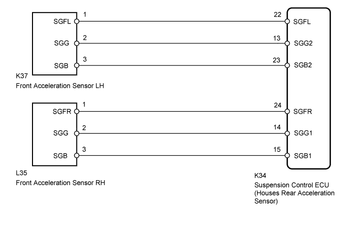
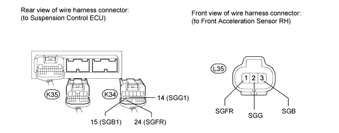
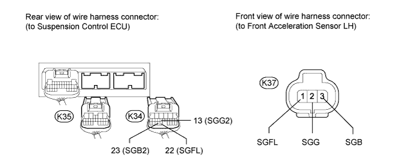
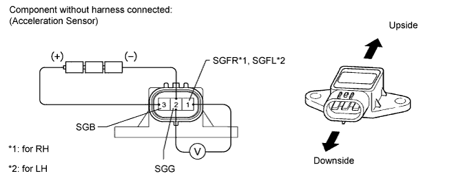

DTC C1715 Front Acceleration Sensor RH Malfunction |
DTC C1716 Front Acceleration Sensor LH Malfunction |
DTC C1717 Rear Acceleration Sensor Malfunction |
DTC C1796 Front Acceleration Sensor RH Malfunction (Test Mode DTC) |
DTC C1797 Front Acceleration Sensor LH Malfunction (Test Mode DTC) |
DTC C1798 Rear Acceleration Sensor Malfunction (Test Mode DTC) |
| DTC Code | Detection Condition | Trouble Area |
| C1715 C1796 | When either of the following conditions is met:
|
|
| C1716 C1797 | When either of the following conditions is met:
|
|
| C1717 C1798 | When either of the following conditions is met:
| Suspension control ECU (Houses rear acceleration sensor) |

| 1.CHECK ACCELERATION SENSOR (DATA LIST) |
Turn the engine switch off.
Connect the intelligent tester to the DLC3.
Turn the engine switch on (IG) and the tester on.
Enter the following menus: Chassis / AHC / Data List.
According to the display on the tester, read the Data List.
| Tester Display | Measurement Item/Range | Normal Condition | Diagnostic Note |
| (Up & Down)G Sensor FR | G (up and down) front acceleration sensor RH reading/ min.: -1045.29 m/s2 max.: 1045.26 m/s2 | 0 +/-0.98 m/s2 at still condition | Reading changes when vehicle (FR) is bounced |
| (Up & Down)G Sensor FL | G (up and down) front acceleration sensor LH reading/ min.: -1045.29 m/s2 max.: 1045.26 m/s2 | 0 +/-0.98 m/s2 at still condition | Reading changes when vehicle (FL) is bounced |
| (Up & Down)G Sensor Rear | G (up and down) rear acceleration sensor reading/ min.: -1045.29 m/s2 max.: 1045.26 m/s2 | 0 +/-0.98 m/s2 at still condition | Reading changes when vehicle (rear) is bounced |
|
| ||||
| OK | |
| 2.RECONFIRM DTC OUTPUT |
Clear the DTCs (Click here).
Perform a road test.
Check for DTCs.
| Result | Proceed to |
| DTC is output | A |
| DTC is not output | B |
|
| ||||
| A | |
| 3.CHECK HARNESS AND CONNECTOR (ACCELERATION SENSOR - SUSPENSION CONTROL ECU) |
Check the front acceleration sensor RH side: (C1715)

Disconnect the K34 and K35 ECU connectors.
Disconnect the L35 sensor connector.
Measure the resistance according to the value(s) in the table below.
| Tester Connection | Condition | Specified Condition |
| L35-1 (SGFR) - K34-24 (SGFR) | Always | Below 1 Ω |
| L35-2 (SGG) - K34-14 (SGG1) | Always | Below 1 Ω |
| L35-3 (SGB) - K34-15 (SGB1) | Always | Below 1 Ω |
| K34-24 (SGFR) - Body ground | Always | 10 kΩ or higher |
| K34-14 (SGG1) - Body ground | Always | 10 kΩ or higher |
| K34-15 (SGB1) - Body ground | Always | 10 kΩ or higher |
Check the front acceleration sensor LH side: (C1716)
Disconnect the K34 and K35 ECU connectors.
Disconnect the K37 sensor connector.

Measure the resistance according to the value(s) in the table below.
| Tester Connection | Condition | Specified Condition |
| K37-1 (SGFL) - K34-22 (SGFL) | Always | Below 1 Ω |
| K37-2 (SGG) - K34-13 (SGG2) | Always | Below 1 Ω |
| K37-3 (SGB) - K34-23 (SGB2) | Always | Below 1 Ω |
| K34-22 (SGFL) - Body ground | Always | 10 kΩ or higher |
| K34-13 (SGG2) - Body ground | Always | 10 kΩ or higher |
| K34-23 (SGB2) - Body ground | Always | 10 kΩ or higher |
|
| ||||
| OK | |
| 4.INSPECT ACCELERATION SENSOR |

Turn the engine switch off.
Remove the front acceleration sensor (Click here).
Connect 3 1.5 V dry cell batteries in series.
Connect the positive (+) end of the batteries to terminal 3 (SGB) of the acceleration sensor and the negative (-) end of the batteries to terminal 2 (SGG). Then measure the voltage between terminal 1 (SGFR*1, SGFL*2) and terminal 2 (SGG).
| Tester Connection | Condition | Specified Condition |
| 1 (SGFR) - 2 (SGG) | Sensor stationary | Approx. 2.0 to 2.5 V |
| Sensor is tilted | Change between approx. 0.9 to 2.3 V |
| Tester Connection | Condition | Specified Condition |
| 1 (SGFL) - 2 (SGG) | Sensor stationary | Approx. 2.0 to 2.5 V |
| Sensor is tilted | Change between approx. 0.9 to 2.3 V |
|
| ||||
| OK | ||
| ||